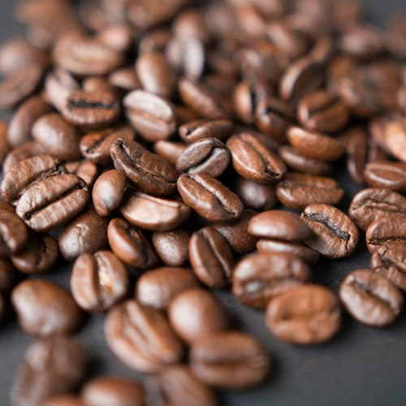
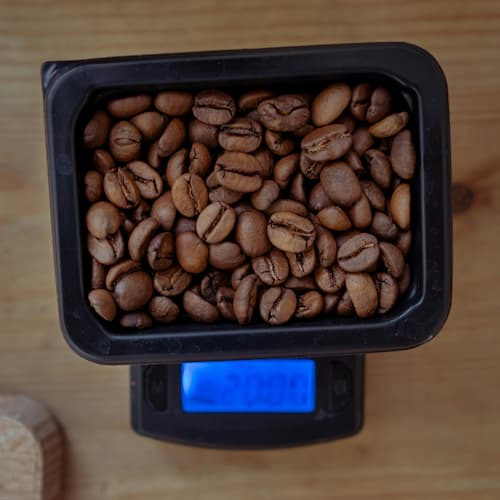
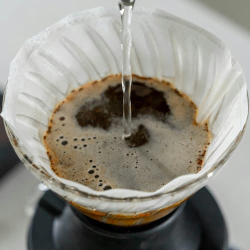
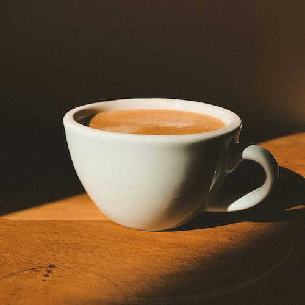

How to Make a Good Coffee
Follow these simple steps to brew the perfect cup at home.
Coffee is a language in itself.
Choose Quality Beans
Start with freshly roasted, high-quality beans. Grind them just before brewing for best flavor.
Measure Properly
Use a scale to measure your coffee and water. A good ratio is about 1:15 (1g coffee to 15g water).
Use the Right Water Temperature
Heat water to around 90-96°C. Too hot or too cold can ruin the extraction.
Brew and Enjoy
Use your preferred method: French press, espresso, pour-over... and enjoy every sip.
Coffee Data
Explore some common types of coffee and their properties:
| Type | Origin | Caffeine Level | Flavor Notes |
|---|---|---|---|
| Arabica | Latin America | Medium | Sweet, fruity |
| Robusta | Africa / Asia | High | Bitter, strong |
| Blend | Colombia + Vietnam | Medium-High | Balanced |
| Special Mix commoly used for commercial espresso | Source: International Coffee Association | ||
Tips for the Perfect Brew
- Experiment with different brewing methods.
- Store your beans in a airtight container.
- Clean your equipment regularly.
- Enjoy your coffee with friends!